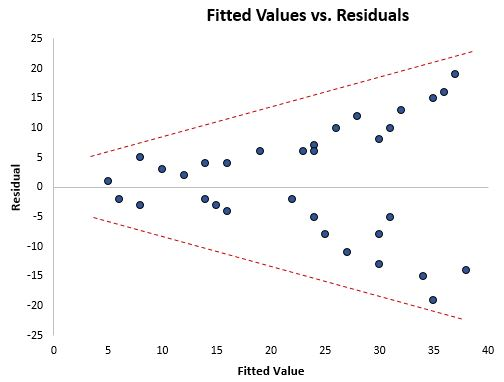
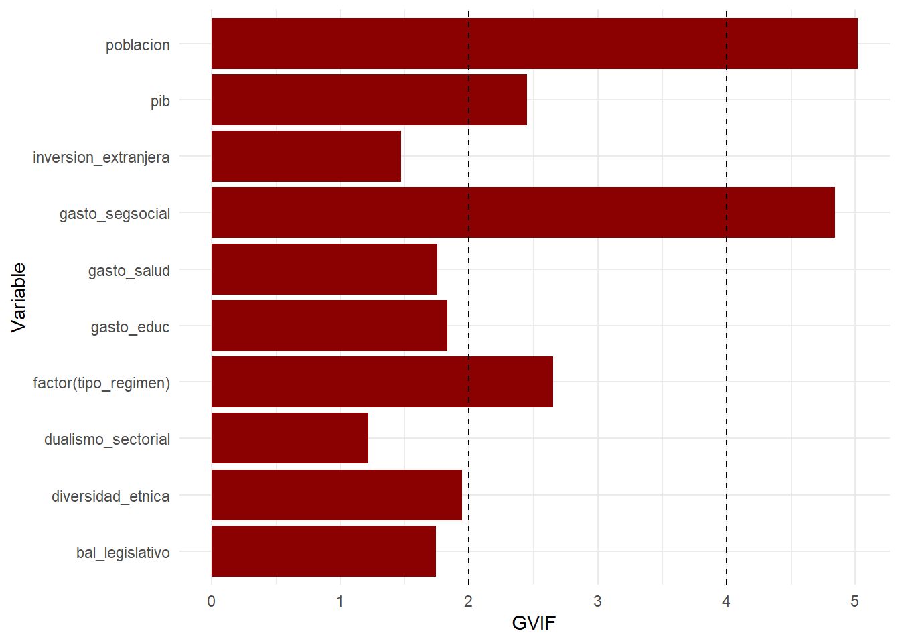
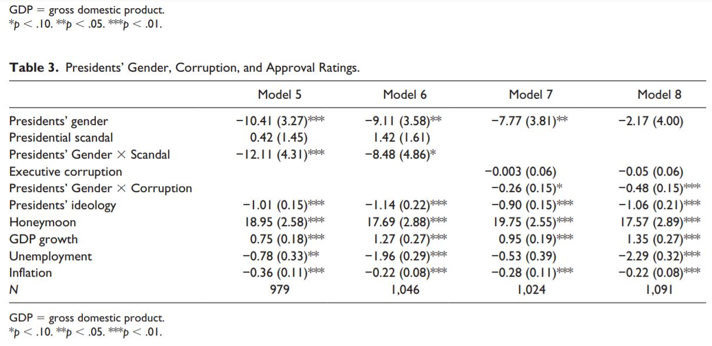

4 Regresión lineal: Repaso.
library(texreg)
library(robustbase)
library(tidyverse)
library(sandwich)
library(lmtest)
library(modelr)
library(broom)
library(MASS)4.1 Recordamos lo que habíamos visto en clase:
data("bienestar")
bienestar_no_na <- bienestar %>%
drop_na(gini, gasto_educ , inversion_extranjera , gasto_salud , gasto_segsocial , poblacion, dualismo_sectorial, diversidad_etnica, pib, tipo_regimen, bal_legislativo)
model_2 <- lm(gini ~ 1 + gasto_educ + inversion_extranjera + gasto_salud + gasto_segsocial +
poblacion + dualismo_sectorial + diversidad_etnica + pib +
factor(tipo_regimen) + bal_legislativo,
data = bienestar_no_na)
screenreg(model_2)##
## =================================
## Model 1
## ---------------------------------
## (Intercept) 85.94 ***
## (8.73)
## gasto_educ 1.59 ***
## (0.45)
## inversion_extranjera 0.24
## (0.18)
## gasto_salud -0.83 **
## (0.26)
## gasto_segsocial -0.83 ***
## (0.20)
## poblacion -0.93 ***
## (0.17)
## dualismo_sectorial -0.17 ***
## (0.03)
## diversidad_etnica 3.68 ***
## (1.04)
## pib -0.00 **
## (0.00)
## factor(tipo_regimen)2 -2.29
## (4.75)
## factor(tipo_regimen)3 -2.90
## (4.70)
## factor(tipo_regimen)4 -5.14
## (4.62)
## bal_legislativo -10.40 ***
## (2.22)
## ---------------------------------
## R^2 0.59
## Adj. R^2 0.56
## Num. obs. 167
## =================================
## *** p < 0.001; ** p < 0.01; * p < 0.054.2 Heterocedasticidad
Decíamos que tenemos que asegurar que las estimaciones de los coeficientes sean válidas, para no caer en errores de comparar cosas que en realidad son incomparables. En la regresión lineal, esto consiste en que la recta formada por la ecuación efectivamente represente el comportamiento de la variable dependiente a lo largo de toda la recta. Esto quiere decir que solo una parte de nuestros datos responde al modelo, y que podrían faltar más variables para estudiar

Ejemplo de heterocedasticidad
Para medir y detectar esto tenemos varias herramientas.
La primera herramienta que veremos es para detectar heterocedasticidad, mediante el text de Breusch-Pagan:
bptest(model_2)##
## studentized Breusch-Pagan test
##
## data: model_2
## BP = 32.369, df = 12, p-value = 0.001213La interpretación de este test es al revés que la de los p-values de los coeficientes: si es menor que 0.05 tenemos que hay heterocedasticidad, como es el caso de este modelo.
Ante esto existen varias alternativas
4.2.1 1) Transformación de variables
Si es el caso, es posible que alguna de las variables tenga una relación no lineal con la variable dependiente, por ejemplo cuadrática o exponencial. Cuando pasa esto el problema se puede resolver transformando la variable problemática.
4.2.2 2) El uso de errores estándar robustos
Básicamente, esto consiste en recalcular los errores estándar para que el intervalo en el cual es más creíble que se mueve el valor real del coeficiente (no olvidemos que nuestro modelo es una estimación), tenga mas probabilidades de contener al valor real.
Esto se hace de la siguiente manera:
# 15
coeftest(model_2, vcov = vcovHC(model_2, type="HC1"))##
## t test of coefficients:
##
## Estimate Std. Error t value Pr(>|t|)
## (Intercept) 8.5936e+01 9.1360e+00 9.4063 < 2.2e-16 ***
## gasto_educ 1.5850e+00 5.2276e-01 3.0321 0.0028505 **
## inversion_extranjera 2.3823e-01 1.4281e-01 1.6682 0.0973145 .
## gasto_salud -8.3020e-01 2.2928e-01 -3.6208 0.0003980 ***
## gasto_segsocial -8.2728e-01 2.6079e-01 -3.1722 0.0018261 **
## poblacion -9.2902e-01 2.0602e-01 -4.5093 1.282e-05 ***
## dualismo_sectorial -1.7044e-01 3.2949e-02 -5.1729 7.080e-07 ***
## diversidad_etnica 3.6796e+00 9.5722e-01 3.8440 0.0001766 ***
## pib -4.2676e-04 1.9039e-04 -2.2415 0.0264209 *
## factor(tipo_regimen)2 -2.2940e+00 1.4133e+00 -1.6231 0.1066179
## factor(tipo_regimen)3 -2.8995e+00 1.2048e+00 -2.4067 0.0172815 *
## factor(tipo_regimen)4 -5.1357e+00 8.7755e-01 -5.8523 2.820e-08 ***
## bal_legislativo -1.0402e+01 2.3816e+00 -4.3676 2.297e-05 ***
## ---
## Signif. codes: 0 '***' 0.001 '**' 0.01 '*' 0.05 '.' 0.1 ' ' 14.3 Factor de inflación de la varianza (VIF)
En la regresión multivariada, uno de los requerimentos adicionales es que las covariantes de la regresión no presentan excesiva correlación entre ellas. Esto se prueba con el factor de inflación de la varianza (VIF):
# 16
library(car)## Loading required package: carData##
## Attaching package: 'car'## The following object is masked from 'package:purrr':
##
## some## The following object is masked from 'package:dplyr':
##
## recodevif(model_2)## GVIF Df GVIF^(1/(2*Df))
## gasto_educ 1.831416 1 1.353298
## inversion_extranjera 1.473459 1 1.213861
## gasto_salud 1.753385 1 1.324155
## gasto_segsocial 4.842801 1 2.200637
## poblacion 5.019055 1 2.240325
## dualismo_sectorial 1.216700 1 1.103041
## diversidad_etnica 1.944754 1 1.394544
## pib 2.450633 1 1.565450
## factor(tipo_regimen) 2.653868 3 1.176648
## bal_legislativo 1.743851 1 1.320550Podemos visualizar gráficamente como se ve:
# Obtenemos los valores
vif_values <- vif(model_2) %>% data.frame()
vif_values$Variable <- row.names(vif_values)
# Creamos el gráfico
ggplot(vif_values) +
geom_bar(aes(x=GVIF, y=Variable), stat="identity", fill="darkred") +
geom_vline(xintercept = c(2, 4), linetype="dashed") +
theme_minimal() +
labs()
Las dos líneas corresponden a los límites de 2 y 4. Algunos autores sugieren que la multicolinealidad es problemática si el VIF adquiere un valor mayor de 2. Otros relajan este supuesto y sugieren que el VIF para una variable no sea mayor de 4.
¿Cómo se resuelve?
Hay que eliminar la variable problemática. Esto se hace una por una y comparando las VIF de los modelos resultantes.
4.4 Interpretacion de coeficientes
Para profundizar en el tipo de asociaciones en las cuales podemos dar cuenta, calcularemos un nuevo modelo mas cercano a lo que publicó Reyes-Housholder (2019)
data("bienestar")
# codificamos las variables:
bienestar <- bienestar %>%
mutate(tipo_regimen=case_when(
tipo_regimen==4 ~ "Democracia Plena" ,
tipo_regimen==3 ~ "Gobierno precario" ,
TRUE ~ "Otro"
))
bienestar_no_na <- bienestar %>%
drop_na(gini, gasto_educ , inversion_extranjera , gasto_salud , gasto_segsocial , poblacion, dualismo_sectorial, diversidad_etnica, pib, tipo_regimen, bal_legislativo)
model_3 <- lm(gini ~ 1 + gasto_educ + inversion_extranjera + gasto_salud + gasto_segsocial + poblacion + dualismo_sectorial + diversidad_etnica + pib +
factor(tipo_regimen) + bal_legislativo,
data = bienestar_no_na)
screenreg(model_3)##
## =================================================
## Model 1
## -------------------------------------------------
## (Intercept) 80.76 ***
## (7.40)
## gasto_educ 1.60 ***
## (0.45)
## inversion_extranjera 0.23
## (0.18)
## gasto_salud -0.81 **
## (0.26)
## gasto_segsocial -0.83 ***
## (0.20)
## poblacion -0.93 ***
## (0.17)
## dualismo_sectorial -0.17 ***
## (0.03)
## diversidad_etnica 3.66 ***
## (1.03)
## pib -0.00 **
## (0.00)
## factor(tipo_regimen)Gobierno precario 2.26 *
## (1.06)
## factor(tipo_regimen)Otro 3.00 *
## (1.35)
## bal_legislativo -10.42 ***
## (2.21)
## -------------------------------------------------
## R^2 0.59
## Adj. R^2 0.56
## Num. obs. 167
## =================================================
## *** p < 0.001; ** p < 0.01; * p < 0.05Para la interpretación debemos tener en cuenta varias cosas: La capacidad explicativa del modelo en su conjunto, los coeficientes de las variables independientes–que explican la relación de cada variable independiente con la variable dependiente–y su significancia estadística.
4.4.1 La R cuadrada
Lo primero es la R cuadrada y la R cuadrada ajustada. Este indicador se interpreta como la proporción de la variación de la variable dependiente que es explicada por el modelo. El indicador más importante es el ajustado, ya que penaliza por el número de variables y nos ayuda a decidir si vale o no la pena la inclusión de una variable. En este caso, podemos decir que nuestro modelo explica el 56% de la variación del coeficiente de Gini entre países y periodos.
4.4.2 Los coeficientes de las variables independientes.
Antes de Avanzar en la interpretación, debemos advertir de ser cuidadosos. Siempre debemos verificar primero que los coeficientes sean estadísticamente significativos antes de interpretar. Como vimos, los coeficientes son una estimación del efecto que pensamos debe tener una variable independiente sobre otra, la dependiente. Para poder verificar esa relación se construyen intervalos de confianza en torno a este estimador, para calcular que tan legos es probable que caiga nuestro estimador del verdadero valor. Esto es, se asocia un error estándar al coeficiente. Siguiendo la tradicion estadística, la probabilidad de que el valor real caiga muy alejado de nuestro estimador se mide a partir de este error estándar: 1.96 veces el error estándar es considerado un intervalo de variación a cada extremo dentro del cual es probable con un 95% de confianza que caiga el valor real.
En otras palabras, debemos cuidar que el rango dentro del cual podría ubicarse el valor real de nuestro estimador, no exista una posibilidad razonable de que en realidad sea la contraria a la que predice nuestro modelo. Los paquetes estadísticos modernos marcan esto con asteriscos: Tres asteriscos cuando la significancia estadística es al 99.9%, dos cuando es al 99% y uno cuando es al 95%. En otras palabras, si el coeficiente no tiene al menos un asterisco al lado es que el margen de error es demasiado grande para poder asegurar que ese sea el comportamiento real de la variable.
De hecho, cuando no tiene ningún asterisco, la interpretación correcta de un coeficiente es que no es estadisticamente significativo y por tanto no se pueden hacer aseveraciones respecto a una posible relación entre la variable independiente y la dependiente. En este caso, la inversión extranjera directa no tiene una relación estadísticamente significativa con el coeficiente de Gini
Una vez aclarado esto, avanzamos en la interpretación de los coeficientes. Aunque el sentido de la interpretación es parecido, debemos dividir la interpretación en dos: variables cuantitativas y variables cualitativas.
4.4.2.1 Variables cuantitativas
En el caso de las variables numéricas, la interpretación es: ante un cambio de una unidad de la variable independiente, la variable dependiente cambiará en lo que indica su coeficiente, siempre que los demás factores se mantengan constantes. Haremos el ejemplo con el gasto en salud.
Por cada unidad que aumente el porcentaje del PIB gastado en salud, el coeficiente de Gini disminuye (si hubiese signo positivo aumenta), en promedio, en 0.81 puntos si el resto de los factores permanecen inalterados. Esta relación es estadísticamente significativa al 95%
4.4.2.2 Variables cualitativas
Aunque la interpretación es parecida, cabe mencionar que en este tipo de variables no podemos hablar del “aumento en una unidad”, sino de la presencia o no de características distintas a la categoría de referencia del modelo.
En el caso de nuestro último modelo, una variable cualitativa es el tipo de régimen, que se divide en democracia, gobierno precario y otro. Cuando metemos una variable cualitativa en un modelo de regresión, el modelo toma una categoría como la referencia, y estima un efecto específico (si es mayor o menor) para las otras. En el caso de nuestro ejemplo, la categoría de referencia es la democracia. Esto lo sabemos porque no aparece en el modelo. Ahora sí, vamos con un ejemplo:
Los países que tienen un gobierno precario presentan, en promedio, un coeficiente de Gini en 2.26 puntos respecto a los que tienen un gobierno democrático, con una significancia estadística de 95%
¿Cual sería el efecto de tener otro tipo de régimen?
4.4.2.3 Interacciones [no se preocupen esto no viene en el examen]
Existe una particularidad: las interacciones. Esto es el término que se usa para referirse a dos variables independientes que actúan juntas con la variable dependiente. En los modelos de regresión podemos especificarlas de manera muy sencilla, utilizando un signo de multiplicación en lugar de un mas entre las variables que queremos interactuar.
model_4 <- lm(gini ~ 1 + inversion_extranjera + gasto_salud + gasto_segsocial +
poblacion + dualismo_sectorial + diversidad_etnica + pib +
factor(tipo_regimen)*gasto_educ + bal_legislativo,
data = bienestar_no_na)
screenreg(list(model_3, model_4))##
## ========================================================================
## Model 1 Model 2
## ------------------------------------------------------------------------
## (Intercept) 80.76 *** 82.17 ***
## (7.40) (8.39)
## gasto_educ 1.60 *** 1.78 **
## (0.45) (0.60)
## inversion_extranjera 0.23 0.23
## (0.18) (0.18)
## gasto_salud -0.81 ** -0.65 *
## (0.26) (0.25)
## gasto_segsocial -0.83 *** -0.96 ***
## (0.20) (0.22)
## poblacion -0.93 *** -0.99 ***
## (0.17) (0.17)
## dualismo_sectorial -0.17 *** -0.15 ***
## (0.03) (0.03)
## diversidad_etnica 3.66 *** 4.18 ***
## (1.03) (1.01)
## pib -0.00 ** -0.00 **
## (0.00) (0.00)
## factor(tipo_regimen)Gobierno precario 2.26 * 8.40 *
## (1.06) (3.37)
## factor(tipo_regimen)Otro 3.00 * -7.46
## (1.35) (4.98)
## bal_legislativo -10.42 *** -9.76 ***
## (2.21) (2.13)
## factor(tipo_regimen)Gobierno precario:gasto_educ -1.66 *
## (0.80)
## factor(tipo_regimen)Otro:gasto_educ 3.18 *
## (1.38)
## ------------------------------------------------------------------------
## R^2 0.59 0.63
## Adj. R^2 0.56 0.60
## Num. obs. 167 167
## ========================================================================
## *** p < 0.001; ** p < 0.01; * p < 0.054.4.3 Ejercicio: interpretar los resultados de esta regresión

Fuente; Reyes-Housholder (2019)
4.4.4 Bibliografía
Reyes-Housholder, C. (2019). A Theory of Gender’s Role on Presidential Approval Ratings in Corrupt Times. Political Research Quarterly.